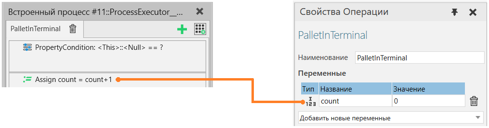

Использование переменных процесса |
|
Переменные процесса являются локальными переменными в процессе, специфичном для процедуры. Переменная в процедуре может быть установлена и на нее можно ссылаться только в одной и той же процедуре. Однако, как операторы требований процедуры, так и операторы процедуры могут обращаться к одним и тем же переменным.
Смотрите также Выражения оператора процесса . Статические переменныеСтатические переменные процедуры процесса создаются вручную из пользовательского интерфейса и остаются между запусками симуляции.  Значение переменной сбрасывается на значение по умолчанию для типа данных при сбросе симуляции и запуске симуляции, но не для каждого выполнения процедуры процесса.
Переменные среды выполненияПеременные среды выполнения создаются операторами, когда определенная выходная переменная не существует. Это удобная функция, поэтому пользователям не нужно заранее определять все используемые переменные. Переменные среды выполнения сбрасываются до значения по умолчанию перед оценкой требований процесса, что означает, что требования процесса могут передавать значения операторам процедуры процесса, но значения сбрасываются между каждым выполнением. Все переменные среды выполнения также удаляются при запуске и сбросе симуляции. Переменные среды выполнения могут содержать ссылки на такие объекты, как экземпляры Product, а также список значений, например целые числа, или ссылки на объекты. Ссылки на объекты и списки ссылок также являются строго типизированными, что означает, что тип объекта, на который делается ссылка, известен и не может быть изменен или ссылка на объект другого типа хранится в переменной. Списки могут содержать только значения одного типа или ссылки на объекты одного типа. Все ссылки на объекты реализованы таким образом, что если объект, на который делается ссылка, удаляется, ссылка становится Null (“None” в Python). Null означает, что ссылка ни на что не указывает. Если ссылка находится в списке, значение Null останется в списке. |